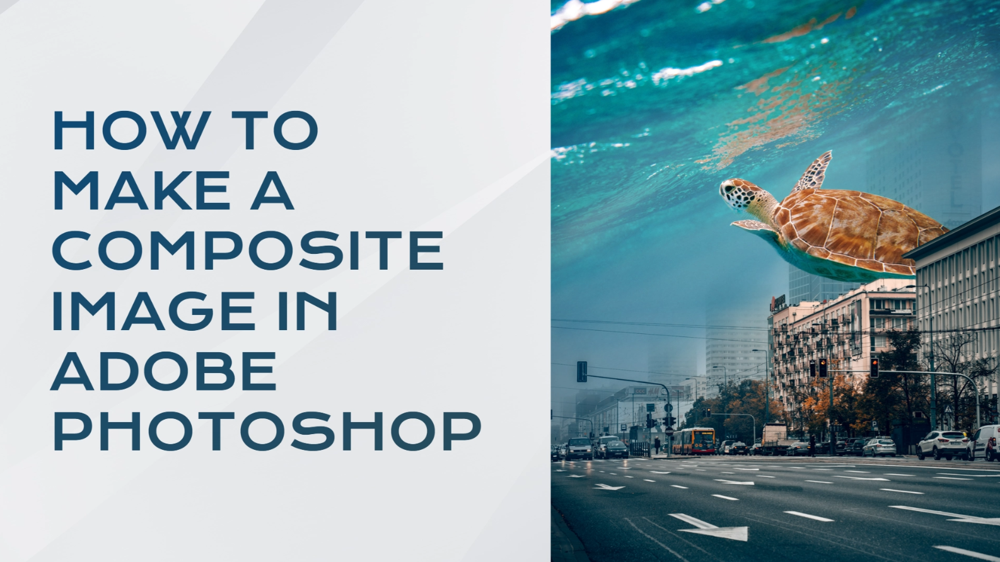

Academic Project · Screencast
Screencast
For this project, I created a narrated software demonstration showing how to complete a task in a real application. The assignment called for a clear, 2–4 minute screencast with narration and visual effects to help learners follow the process. I chose to demonstrate how to use layer masks in Adobe Photoshop to create a composite image.

Reflection
I really enjoyed making this screencast. I spent quite a while deciding which tool in Adobe Illustrator or Photoshop to demonstrate, but eventually settled on using layer masks to create composite images in Photoshop.
I started by creating a few potential examples, then considered how long each would take and how many tools I would need to demonstrate. I wanted the project to be fun and whimsical to encourage others to learn the technique. I ultimately chose the image of a turtle swimming over a city.
I first recorded my screen using the Windows Snipping Tool, completing the entire composition from start to finish within the required 2–4 minute timeframe. I then imported the recording into Clipchamp and recorded my narration in Audacity while watching the video play. Finally, I edited everything together in Clipchamp, adding graphics, a title card, narration, and background music.
Overall, it was a very enjoyable process and much more fulfilling than the AI digital animation project.